Dikjstra Visualized
Draw a weighted graph and watch Dijkstras happen.
Author: Andre Fuentes
Instructions:
When you would like to place a node, click anywhere inside of the colored colored box.

If you would like to remove a node, just double click on the node.

When you would like to connect two nodes, click one node then the other. This generates a line between the two nodes with a random weight.
When your graph is ready, you can start Dijkstras by hitting the start Dijkstras button, and clicking on the first starting node then the ending node.
Once the animation has run and you have your path, you can click on other red/green nodes to see other paths computed up to the ending node you selected.